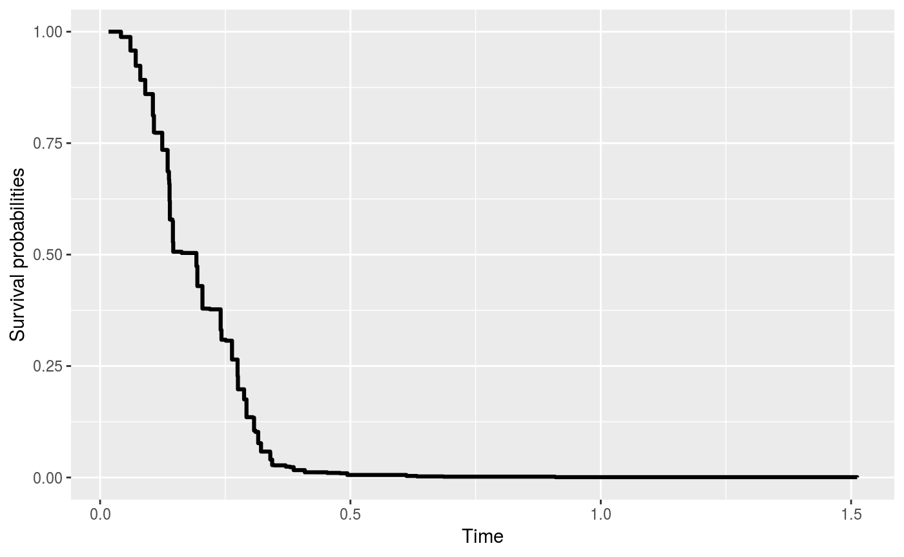

rocTree packagevignettes/rocTree-forest.Rmd
rocTree-forest.RmdIn this vignette, we demonstrate how to use the rocForest function in rocTree package to fit the proposed Receiver Operating Characteristic (ROC) guided survival tree.
We will demonstrate the usage of rocForest function with a simulated data prepared by the simu function.
> library(rocTree)
> set.seed(2019)
> dat <- simu(n = 100, cen = 0.25, sce = 2.1, summary = TRUE)
Summary results:
Number of subjects: 100
Number of subjects experienced death: 77
Number of covariates: 2
Time independent covaraites: z1.
Time dependent covaraites: z2.
Number of unique observation times: 100
Median survival time: 0.3213932rocForest functionThe complete list of arguments in rocForest are as follow:
> args(rocForest)
function (formula, data, id, subset, splitBy = c("dCON", "CON"),
control = list())
NULLThe arguments are as follows:
formula is a formula object, with the response on the left of a ~ operator, and the predictors on the right. The response must be a survival object returned by the function Surv from the survival package.data is an optional data frame to interpret the variables occurring in the formula.id an optional vector used to identify the longitudinal observations of subject’s id. The length of id should be the same as the total number of observations. If id is missing, then each row of data represents a distinct observation from subjects and all covariates are treated as a baseline covariate.subset an optional vector specifying a subset of observations to be used in the fitting process.splitBy a character string specifying the splitting algorithm. The available options are CON and dCON corresponding to the splitting algorithm based on the total concordance measure or the difference in concordance measure, respectively. The default value is dCON.control a list of control parameters.control optionsSome of the options in control are shared with that for rocTree. The argument control defaults to a list with the following values:
tau is the maximum follow-up time; default value is the 90th percentile of the unique observed survival times.M is the maximum node number allowed to be in the tree; the default value is 1000.hN is the smoothing parameter used in the Kernel; the default value is tau / 20.minsp is the minimum number of failure required in a node after a split; the default value is 20.minsp2 is the minimum number of failure required in a terminal node after a split; the default value is 5.disc is a logical vector specifying whether the covariates in formula are discrete (1). The length of disc should be the same as the number of covariates in formula.parallel is a logical vector specifying whether parallel computing will be applied to grow the random forest; the default value is FALSE.parCluster is an integer value specifying the number of CPU cores to be used when parallel = TRUE. The default value is half of the number of CPU cores detected.B is the number of survival trees to grow for the random forest; the default value is 500.fsz is a function or a numerical value to specify the size of subsample. The default value is half of the number of subjects, e.g., round(n) / 2, where n is the number of subjects.Random forests improve the variance reduction of bagging by reducing the correlation between the trees via random selection of predictors in the tree- growing process. In the following, we grow the random forest with fully grown trees with small terminal nodes and without pruning. We first load the survival package to enable Surv. A random forest with 500 survival trees can be grown as follow:
> library(survival)
> system.time(fit <- rocForest(Surv(Time, death) ~ z1 + z2, id = id, data = dat,
+ control = list(minsp = 3, minsp2 = 1, parallel = TRUE)))
user system elapsed
0.088 0.020 4.533 Some of the important parameters can be printed directly.
> fit
rocForest result
Call:
rocForest(formula = Surv(Time, death) ~ z1 + z2, data = dat, id = id, control = list(minsp = 3, minsp2 = 1, parallel = TRUE))
Sample size: 100
Number of independent variables: 2
Number of trees: 500
Split rule: dCON
Number of variables tried at each split: 2
Size of subsample: 50
Minimum number of failure in a node: 3
Minimum number of failure in a teminal node: 1 The function rocForest returns an object of S3 class – rocForest. The 500 survival trees are stored in fit$forest. These survival trees can be printed and plotted with the generic function print and plot, respectively. For example, the first of the 500 survival trees can be printed/plotted as below.
> print(fit, tree = 1)
ROC-guided survival forest: tree # 1
node), split
* denotes terminal node
Root
¦--2) z1 <= 0.47312
¦ ¦--4) z2 <= 0.34409
¦ ¦ ¦--8) z2 <= 0.11828
¦ ¦ ¦ ¦--16) z2 <= 0.10753
¦ ¦ ¦ ¦ ¦--32) z2 <= 0.086022*
¦ ¦ ¦ ¦ °--33) z2 > 0.086022*
¦ ¦ ¦ °--17) z2 > 0.10753*
¦ ¦ °--9) z2 > 0.11828*
¦ °--5) z2 > 0.34409
¦ ¦--10) z2 <= 0.48387
¦ ¦ ¦--20) z2 <= 0.40860*
¦ ¦ °--21) z2 > 0.40860*
¦ °--11) z2 > 0.48387
°--3) z1 > 0.47312
¦--6) z2 <= 0.83871
°--7) z2 > 0.83871
¦--14) z2 <= 0.88172*
°--15) z2 > 0.88172*
> plot(fit, tree = 1)tree argument. Users are referred to the Package vignette on fitting time-invariant survival tree for different printing/plotting options.
Suppose we have a new data that is generated as below:
> newdat <- dplyr::tibble(Time = sort(unique(dat$Time)),
+ z1 = 1 * (Time < median(Time)),
+ z2 = runif(1))
> newdat
# A tibble: 100 x 3
Time z1 z2
<dbl> <dbl> <dbl>
1 0.0168 1 0.590
2 0.0315 1 0.590
3 0.0417 1 0.590
4 0.0606 1 0.590
5 0.0711 1 0.590
6 0.0803 1 0.590
7 0.0872 1 0.590
8 0.0901 1 0.590
9 0.102 1 0.590
10 0.105 1 0.590
# ... with 90 more rowsThe predicted survival curve can be plotted with the following codes.
> pred <- predict(fit, newdat)
> pred
Fitted survival probabilities for subject # 1 :
Time Surv
1 0.01676500 1.0000000
2 0.03145121 1.0000000
3 0.04165134 0.9993752
4 0.06056327 0.9993752
5 0.07110612 0.9993752
> plot(pred)